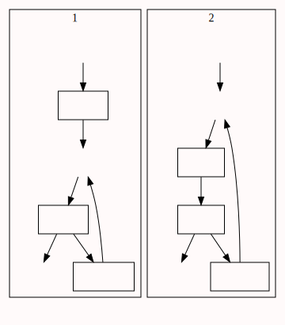

控制论
N.维纳
第一部分 1948
- 本书尽量避免使用许多的数学符号和数学公式.
- 这只是一本入门性质的小册子
- 活泼毫无拘束的谈话
- 从莱布尼次以后似乎没有人能够掌握当代的全部知识活动了
- 科学日益成为专家在越来越狭窄的领域中进行着的事业
- 他满嘴是那个领域的行话,知道那个领域的全部文献
- 每一个简单的概念从各个方面得到不同的名称
- 一些重要的工作被各方面重复做了三四遍
- 科学的边缘地区是最最不能用集体攻击和劳动分工这种公认的方法来达到目的的.
- 预测未来理论,复杂计算,反馈,通信理论,博弈论
- 消息就是统计学家所谓的时间序列
- 工程设计与其说是一门科学,不如说是一门艺术
- 一个系统的熵,就是它无组织程度的度量
- 推动数理逻辑发展的冲动也推动了思维过程的理性的或实际的机械化
- 数学,生理学,工程学,心理学,社会学,人类学,经济学
- 兴奋和抑制的概念在性质上更接近于乘法而非加法.
- 用冲动数量的对数做底, 这个线路就接近于线性运算器
- 在具有恒定能级的线性震动系统中,刺激曲线的形状除了那些几率为0的情况以外.都必须是正弦波形的
- 动作一周所需要的完全运转时间,其数量级约为秒
- 在社会学,人类学,经济学上,行家经验的判断十分重要
- 建立一个以人的价值为基础而不是买卖为基础的社会
- 他具有为善和为恶的巨大可能性
- 把我们个人的努力限制在远离战争和剥削的领域中
- 气象学的挑战:对象太小,太多
牛顿时间和柏格森时间
统计力学
- 无法获得牛顿力学中的初始速度和初始动量
- 统计力学关于几率为0的偶然事件的内在要求,以及关于对这些偶然事件的几率求和的内在要求,实际上是能够实现的.
- 各态历经理论???
时间序列信息通讯
- 信息量:一个可以看做几率的量的对数的负数,即负熵
- 信息量的平均具有熵的各种性质
- 信息损失的过程与熵增加的过程相似
- 高共振物质非常普遍的都有一种非常的储藏能量和信息的能力.
反馈和震荡
- 反馈:海军的复述命令
- 反馈:稳定温度,稳定速度,稳定位置
- 一些情况下,现在的状态并不由过去决定
- 周期性非正弦震荡的存在,常常表明对于我们所观察变量来说系统是非线性系统
- 线性震荡振幅和频率完全无关
- 非线性震荡:一般给定频率,振幅是一定的
- 一般来说,非线性方程组很难求解
- 稳定器?人体的稳态也是反馈调节系统(进行的比较慢)
计算机和神经系统
- 计算机本质上是一种记录数字,计算数字并给出数字结果的机器
- 计算机既要是一个算术机器,有要是一个逻辑机器
- 人类大脑在计算完成后完全清除其记录是不可能的
- 人类大脑是如何记忆的?
- 一个证明表示一个用有限步骤达到确定结论的逻辑过程
- 条件反射是学习的机制
- 没有任何一种计算机的能量消耗接近大脑这样经济的程度了
完形和普遍观念
- 用洛克的观念联想学说来说明神经系统机构的可能性
- 洛克认为联想是按照邻接原则,类比原则和因果原则进行的
- 生命体机构的空间尺度比最精巧的人造机构要小得多
- 有些反馈纯粹是自动调节性质的
- 在视觉过程的某个阶段轮廓被强调 起来
- 皮质各部分有普遍的同步性
- 视觉和听觉之间的面积比例大约是100:1
控制论和精神病理学
- 大脑是怎样避免由于个别部件失灵而引起动作上的重大错误和重大失败的?
- 每一道运算同时交给三套机器去运算,
- 在一个包含大量神经元的系统中,循环过程是难以保持长期稳定的,或者逐渐被削弱,终于消失.或者牵动越来越多的神经元,直到占用了神经元从中过大的一部分
- 在所有正常的过程中, 睡眠最像是非病理的清洗了
- 人有可能实在过度负荷的边缘上有效地完成着复杂的行为,一旦越过边缘他就会完全崩溃
- 在精神错乱时,叫高级的过程最先恶化
- 在成年人身上,因为劣势半球上的广泛损伤而发生的影响比起优势半球上类似损伤所引起的影响要小得多.
- 我们可能面临着自然界的限制之一.我们的器官从高度专门化到效能衰退,最后到物种消灭,人类的脑子可能是沿着这条毁灭性的专门化道路前进
信息语言和社会
- 团体的界限:团体信息能够有效传递到的那个界限
- 科学也因为发展到如此专业化的程度,以致专家们一越出自己的专业便一无所知
- 市场是赌局,他严格遵循冯诺依曼发展出来的一般博弈理论
- 即使最聪明最无原则的唯利是图的人也会倾家荡产
- 大家都被卷入繁荣与衰落的周期中
- 当骗子聚集在一起的时候,一定会有傻瓜(完全理性的经济人假设)
- 某种甜言蜜语,贿赂和恐吓的混合物会引诱一个年轻的科学家去研究导弹和原子弹
- 没有一个人是十足的傻瓜或者十足的骗子
- 对于公共利益或真自己亲眼见到的别人的苦难总是有些利他精神的
- 小而紧密的结合着的社会有极大程度的内稳定性
- 只有在大的社会里,残忍才能达到他的最高峰
- 人和组织所以能够保持自身的内稳定性,是由于他具有取得,使用,保持和传递信息的方法
- 美国的社会是以买卖为基础的社会
- 通讯工具的次要方面越来越侵占他的主要方面
- 人们只能到有钱的地方去找钱
- 争权夺利是社会中主要的反内稳定性的因素
- 国家就像狼群一样,他比他的大部分成员更为愚蠢
- 一门精密科学的所有巨大成功都是在可以把观察者和现象高度分离开的领域里得到的
- 社会学家没有从永恒的,与时间地点无关的角度,冷静的观察他的科目的那种便利
- 我们不能忽视这些信息,但我们对这些信息的可靠性不报太大希望
第二部分 1961
关于学习和自生殖机
- 学习的能力和生殖自己的能力是我们公认的作为生命系统特征的两种现象
- 个体发育和系统发育的学习都是动物根据周围环境来调节自己的方式
- 对于人,个体发育的学习和个体适应性被提高到了最重要的位置
- 人造的机器能学习吗?他们能生殖出自己吗?yes
- 对待博弈的谨慎态度,往往造成优柔寡断.结果比失败好不了多少
- 不要设想和一个全能的敌人打一场全能的战役,(博弈的双方是平等的)
- 学习机一般总是靠非线性反馈来运转
- 短剑决斗,包括一连串的佯攻,闪避和冲刺.(博弈)
- 对所有战争的指挥也可能做到某种程度的机械化
- 如果我们追求胜利,但不知道胜利是什么意思.我们将会发现鬼魂在敲我们的门.(悲伤的后果)
- 机器不只是物质的一种形式,而是为完成某确定目的的一种动作机构
脑电波和自行组织系统
- 抽样波谱与实际波谱有相同的对时间平均的值
- 大脑的时钟周期是0.1s ?
- 自相关?
- 把其他频率拉成是自己的频率是否是一种趋势
- 发电机串联排斥,并联吸引?(频率方面)

十进制计算机:不考虑负数
| 数字 |
对应机器码 |
对应十进制数 |
| 0 |
0000_0000 |
0 |
| 1 |
0000_0001 |
1 |
| 2 |
0000_0010 |
2 |
| 3 |
0000_0100 |
4 |
| 4 |
0000_1000 |
8 |
| 5 |
0001_0000 |
16 |
| 6 |
0010_0000 |
32 |
| 7 |
0100_0000 |
64 |
| 8 |
1000_0000 |
128 |
| 9 |
1111_1111 |
255 |